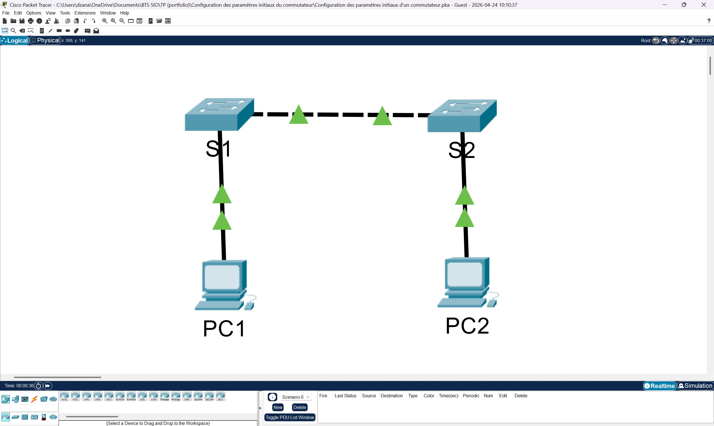
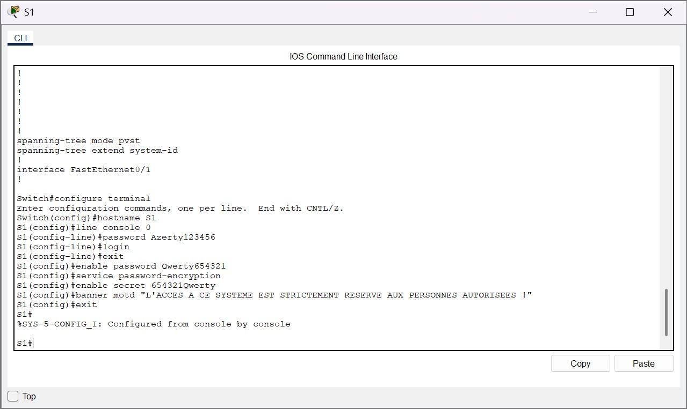
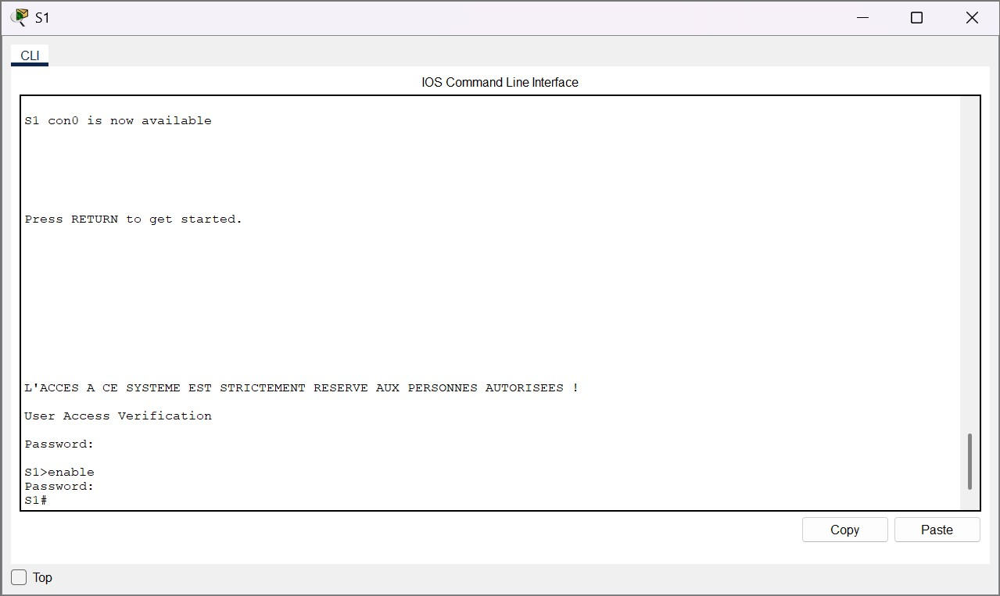

Présentation
Configuration de base d’un commutateur Cisco : nom d’hôte, accès console, mots de passe, bannière et sauvegarde.

Configuration de base d’un commutateur Cisco : nom d’hôte, accès console, mots de passe, bannière et sauvegarde.
Les captures ci-dessous constituent les éléments de preuve associés à la réalisation. Elles sont conservées dans le dépôt afin de documenter la démarche et les résultats.





Ce TP m’a permis de maîtriser les bases de l’administration d’un commutateur Cisco et les premiers réflexes de sécurisation.